Weekly Progress
Week 9 - Project Progress
Week 9 combined two tracks: cloud-removal preprocessing for Sentinel-2 optical scenes, and tri-temporal dataset expansion across new flood-prone locations.
At a glance
Cloud-resilient data pipeline
This week balanced preprocessing improvements with new tri-temporal site collection.
Focus
- Set up a cloud-removal workflow for Sentinel-2 optical scenes.
- Expand the BEFORE/ON/AFTER dataset with flood-relevant Sri Lankan locations.
Work Done
- Reproduced the DSen2-CR environment for cloud-heavy tiles.
- Generated sample outputs across three test sets (mask/input/prediction).
- Added new triplets from Kelani, Mahaweli (Trincomalee), and Negombo.
Results / Observations
- Cloud-removal outputs improve visual continuity for heavily occluded scenes.
- Combined optical + SAR guidance is promising for preserving structure.
- New locations increase event diversity for downstream training and validation.
Next Week Plan
- Run more scenes through cloud removal and compare with manual labels.
- Evaluate whether cloud-free predictions improve annotation consistency.
- Finalize naming and packaging standards across all triplets.
Preprocessing
DSen2-CR setup
Environment setup and reference paper used for cloud-removal experiments.
Why this pipeline
Optical scenes are often blocked by dense cloud cover. DSen2-CR offers a practical way to reconstruct cloud-obscured regions so tri-temporal interpretation becomes more stable.
DSen2-CR · ameraner/dsen2-cr
Residual network approach for Sentinel-2 cloud removal with SAR guidance and cloud-adaptive loss.
- Cloud occlusion hides true land-surface change in optical time series.
- Residual reconstruction provides a usable cloud-free approximation.
- SAR guidance can preserve scene structure during reconstruction.
Reference paper
Outputs
Cloud-removal results
Each set shows mask, raw input, enhanced input, and predicted cloud-free image.
| Cloud Mask | Raw Input | Brightness-Stretched Input | Predicted Cloud-Free |
|---|---|---|---|
| Set 1 | |||
|
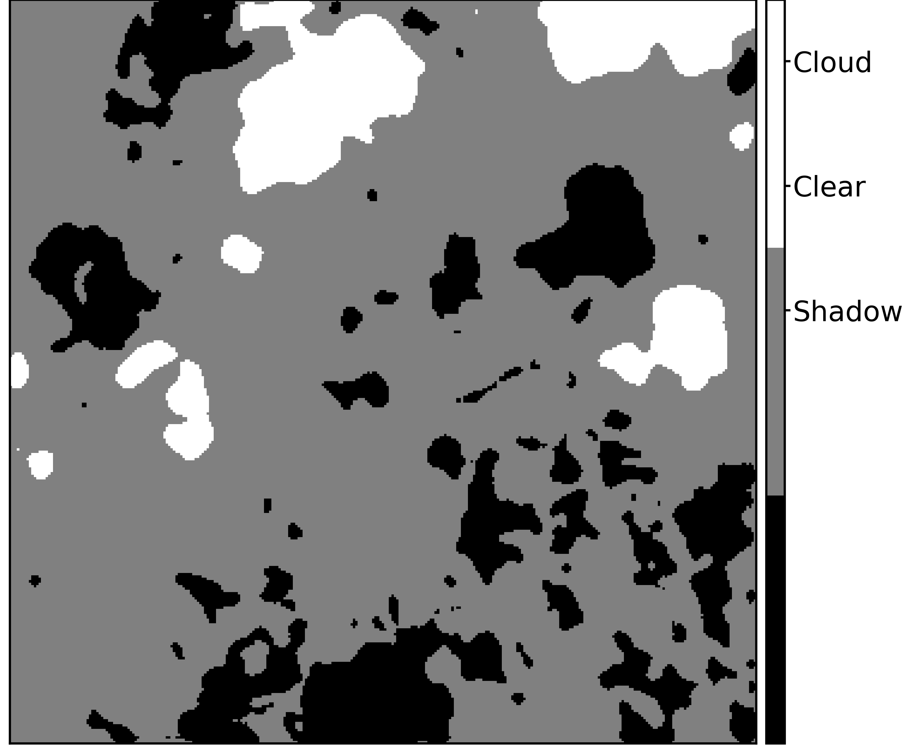 |

|

|

|
| Set 2 | |||

|
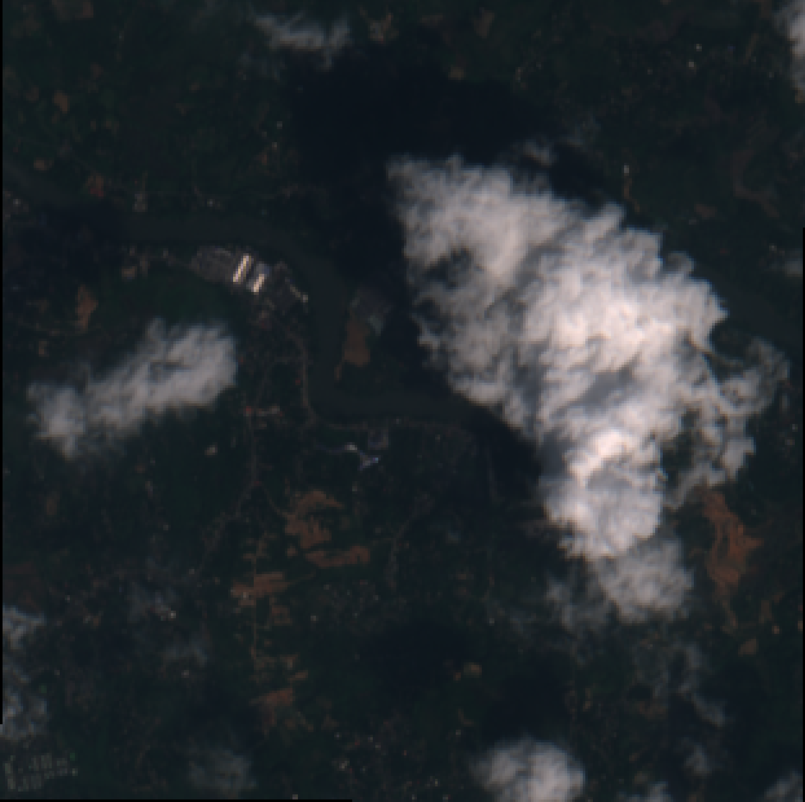 |

|

|
| Set 3 | |||
|
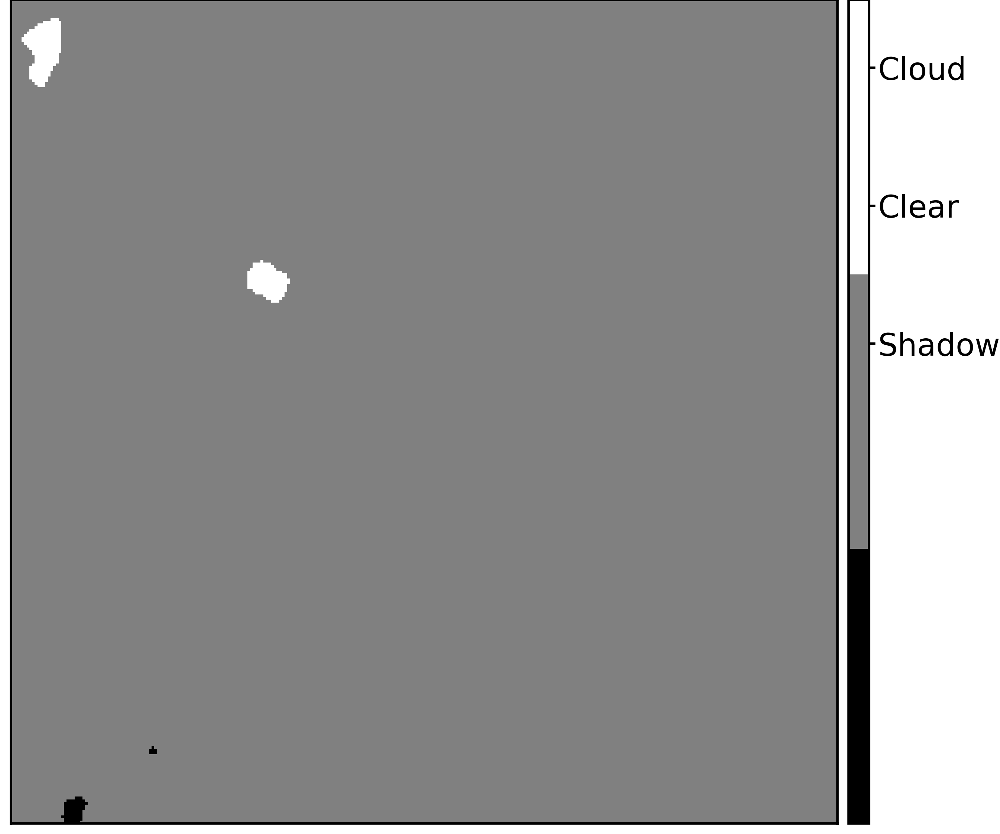 |
|
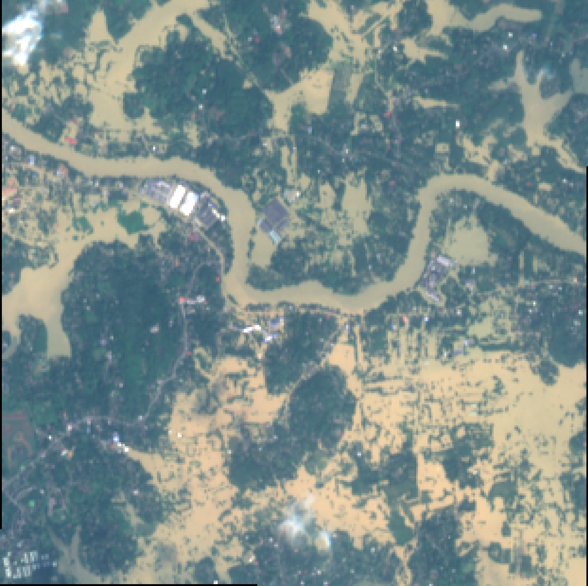 |
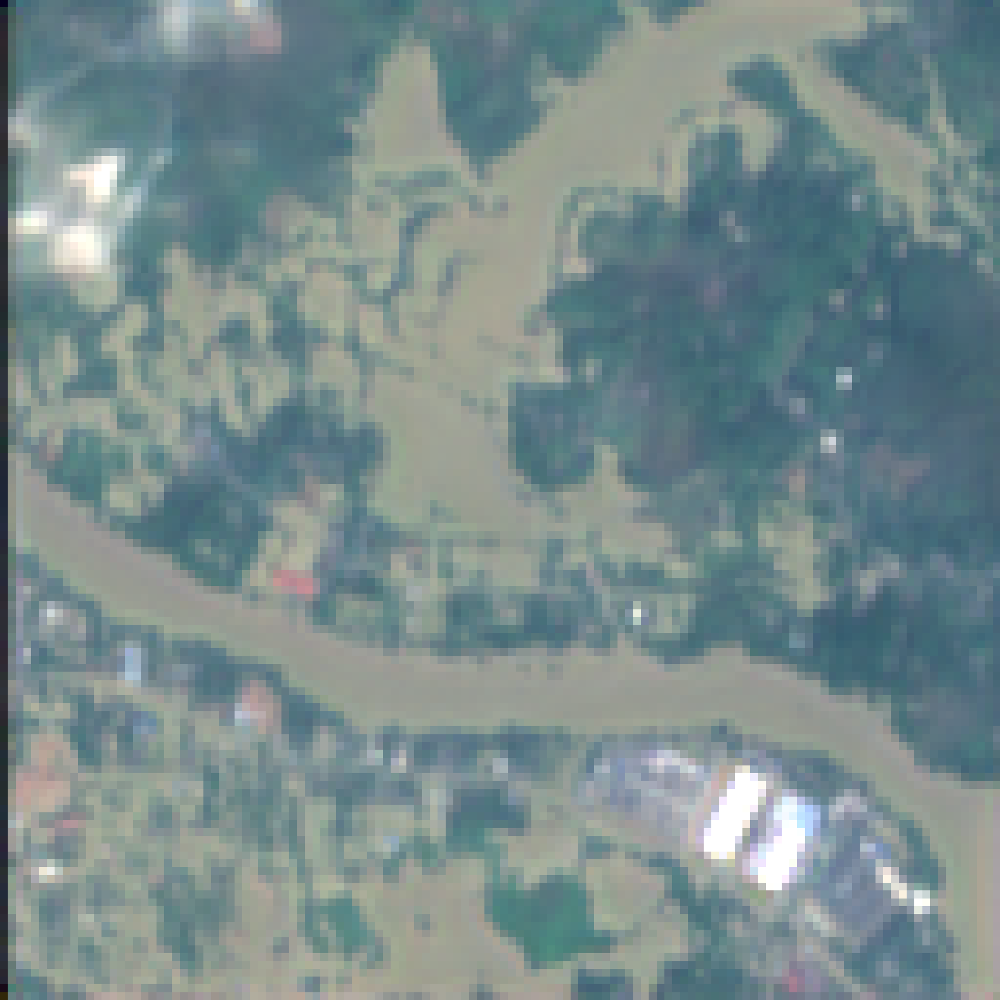 |
Dataset expansion
Week 9 sample triplets
New BEFORE / ON / AFTER samples from flood-prone and coastal zones.
| Before | On | After |
|---|---|---|
| Kelani River Flood-Prone Area | ||
|
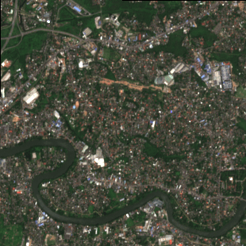 |
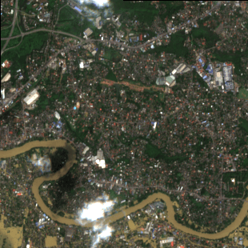 |

|
| Mahaweli River near Trincomalee | ||
|
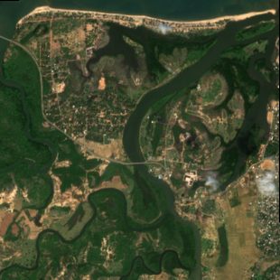 |
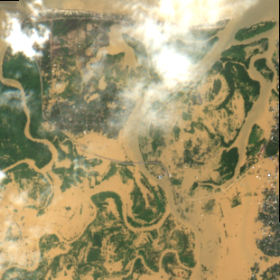 |
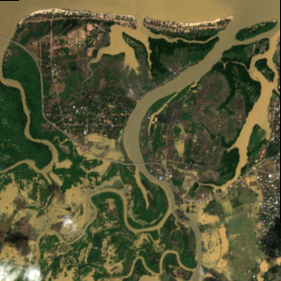 |
| Negombo Lagoon | ||
|
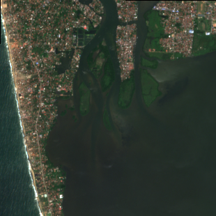 |
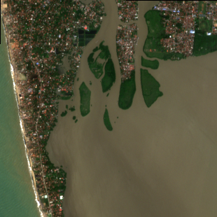 |
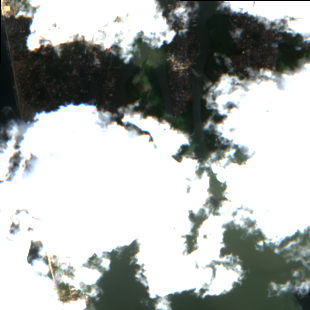 |